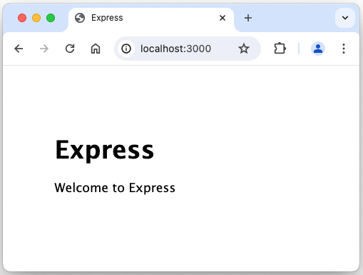

前言
学生信息管理系统/图书馆信息管理系统/……等信息管理系统，是被广泛使用的、和数据库技术结合的信息管理系统。一个信息管理系统，需要有人机交互界面，供用户、系统管理员等使用，实现和提供信息的增删改查等核心能力和功能。人机交互界面有很多种形式，以及很多种技术实现方式。在当今互联网高速发展时代，在人们日常生活中出现较多的人机交互界面有手机App界面、微信等小程序界面、个人电脑/Pad等Web界面，等。
本指南选取日常生活中出现较多的Web界面，提供相关的开发指南建议，用于某某信息管理系统。Web界面通常在个人电脑、Pad上使用，在手机上也可以使用。
Web界面开发有很多方式。本指南选取基本的“三件套”方式，即 html + css + javascript。本指南适合于没有开发过 Web 界面的同学，将从零开始，一步步实现用于某某信息管理系统的 Web 界面。
初认Web页面/界面
Hello World -- html
按惯例，总是先写一个 Hello World! 程序，虽然 html 不是编程语言。
<!DOCTYPE html>
<html>
<head>
<meta charset="utf-8">
<title>Personal Website of George Donne</title>
</head>
<body>
<h1>My First Web Page</h1>
<p>Hello World!</p>
</body>
</html>一个基本界面 -- html + css
（待细化优化内容）
对于某某信息管理系统，查询是使用很频繁的功能。仿照百度或Google首页，用html写一个基本界面。参考代码如下：
（待补充参考代码）使用css调整和优化界面的显示，让界面看上去和百度/Google类似。参考代码如下：
（待补充参考代码）显示查询得到信息的界面 -- html + css + javascript
（待细化优化内容）
比如根据学号查询学生信息。不同学生的信息都不同，比如姓名、性别、手机等。JavaScript是一门编程语言，初步实现设想是：
- 在界面上输入查询提交。比如要查询的学号。
Web界面架构设计和搭建
界面交互流程设想
- 在浏览器地址栏输入网址并回车，浏览器显示网站首页，中间有个查询输入框，输入学号按查询按钮可以查询学生信息。
- 点击网站首页右上方导航栏中的新增，出现新增页面，输入相关信息后，点击提交按钮，可新增一个学生的相关信息。
- 更新、删除，也是类似。
一些预备知识
有兴趣的同学可以快速浏览以下几篇文章，做到知晓就可以了。文章中的更多链接，可以今后再点击查看，先快速浏览文章本身内容。
在Windows或macOS上安装 Node 和 NPM
在 Windows 和 macOS 上安装 Node 和 NPM 非常简单明了，使用现成的安装包就行了：
- 下载安装包：
- 访问 https://nodejs.org/zh-cn/
- 左侧按钮上写着“推荐多数用户使用（LTS）”，点击下载。
- 双击下载的安装包，按照提示即可安装。
检查 Node 是否成功安装的最简单方法就是在终端（或命令行）中运行 "version" 命令，看是否返回版本号字符串。NPM 应该与 Node.js 一同成功安装，可以使用同样的方法来测试一下。以下是macOS zsh为例：
% node -v
v20.12.2
% npm -v
10.5.0创建 Hello World 网站
新建目录 appdemo，并在该目录下创建 helloworld.js，内容如下：
// 加载 HTTP 模块
const http = require("http");
const hostname = "127.0.0.1";
const port = 3000;
// 创建 HTTP 服务器
const server = http.createServer((req, res) => {
// 用 HTTP 状态码和内容类型（Content-Type）设置 HTTP 响应头
res.statusCode = 200;
res.setHeader("Content-Type", "text/plain");
// 发送响应体
res.end("Hello World!\n");
});
// 监听 3000 端口的请求，注册一个回调函数记录监听开始
server.listen(port, hostname, () => {
console.log(`服务器运行于 http://${hostname}:${port}/`);
});在命令行工具中进入 helloworld.js 文件所在的目录，输入“node + 文件名”并运行，服务器就启动了：
~/appdemo % node helloworld
服务器运行于 http://127.0.0.1:3000/在浏览器中访问这个 URL http://127.0.0.1:3000/ 或 http://localhost:3000/，如果一切正常，浏览器会直接显示出 "Hello World!" 字符串。
用 Express 框架创建 Hello World 网站
进入创建的appdemo目录，执行 npm init初始化项目。此命令将要求你输入几个参数，例如此应用的名称和版本。 你可以直接按“回车”键接受大部分默认设置即可，下面这个除外：
entry point: (index.js) # 当前目录如有js文件，则可能显示js文件如helloworld.js。键入 appdemo.js 或者你所希望的名称，这是当前应用的入口文件。如果你希望采用默认的 index.js 文件名，只需按“回车”键即可。
~/appdemo % npm init
This utility will walk you through creating a package.json file.
It only covers the most common items, and tries to guess sensible defaults.
See `npm help init` for definitive documentation on these fields
and exactly what they do.
Use `npm install ` afterwards to install a package and
save it as a dependency in the package.json file.
Press ^C at any time to quit.
package name: (appdemo)
version: (1.0.0) 1.1.1
description: app demo for student information management
entry point: (helloworld.js) appdemo.js
test command:
git repository:
keywords:
author: George Donne
license: (ISC)
About to write to /appdemo/package.json:
{
"name": "appdemo",
"version": "1.1.1",
"description": "app demo for student information management",
"main": "appdemo.js",
"scripts": {
"test": "echo \"Error: no test specified\" && exit 1"
},
"author": "George Donne",
"license": "ISC"
}
Is this OK? (yes) y 在vscode中查看生成的package.json，或者输入如下cat命令查看
~/appdemo % cat package.json以下是package.json的内容：
{
"name": "appdemo",
"version": "1.1.1",
"description": "app demo for student information management",
"main": "appdemo.js",
"scripts": {
"test": "echo \"Error: no test specified\" && exit 1"
},
"author": "George Donne",
"license": "ISC"
}执行 npm install express --save，在当前目录（appdemo）下安装 Express。
~/appdemo % npm install express --save
added 64 packages, and audited 65 packages in 9s
12 packages are looking for funding
run `npm fund` for details
found 0 vulnerabilities在当前目录下新建 helloworld-express.js，文件内容如下：
const express = require("express");
const app = express();
app.get("/", (req, rsq) => {
rsq.send("Hello World!");
});
app.get("/user/:id", (req, rsq) => {
rsq.send("Hello " + req.params.id + " !");
});
app.listen(8000, () => {
console.log("示例程序正在监听 8000 端口！");
});输入“node + 文件名”并运行，服务器就启动了：
~/appdemo % node helloworld-express
示例程序正在监听 8000 端口！在浏览器中输入不同的URL，观察浏览器的输出的变化：
- 在浏览器中访问这个 URL http://127.0.0.1:8000/ 或 http://localhost:8000/，如果一切正常，浏览器会直接显示出 "Hello World!" 字符串。
- 在浏览器中访问这个 URL http://127.0.0.1:8000/user/george 或 http://localhost:8000/user/george，如果一切正常，浏览器会直接显示出 "Hello george !" 字符串。将URL中的george改成其他比如张三，则浏览器得到显示"Hello 张三 !" 字符串
可以看到：在浏览器中输入不同的URL，可以得到不同的显示。这正是所需要的。
生成Web界面应用的框架
Express 应用生成器工具（express-generator）可以生成一个 Express 应用的“框架”。然后在该框架上做修改，就可以快速完成某某信息管理系统的Web界面。
执行 npx express-generator --view=pug，安装express应用生成器工具，并指定模板引擎是pug。
~/appdemo % npx express-generator --view=pug
destination is not empty, continue? [y/N] y
create : public/
create : public/javascripts/
create : public/images/
create : public/stylesheets/
create : public/stylesheets/style.css
create : routes/
create : routes/index.js
create : routes/users.js
create : views/
create : views/error.pug
create : views/index.pug
create : views/layout.pug
create : app.js
create : package.json
create : bin/
create : bin/www
install dependencies:
$ npm install
run the app:
$ DEBUG=appdemo:* npm start根据 npx express-generator --view=pug 命令执行结果中的提示，执行 npm install 安装依赖（install dependencies）。
/appdemo % npm install
npm WARN deprecated core-js@2.6.12: core-js@<3.23.3 is no longer maintained and not recommended for usage due tothe number of issues. Because of the V8 engine whims, feature detection in old core-js versions could cause aslowdown up to 100x even if nothing is polyfilled. Some versions have web compatibility issues. Please, upgradeyour dependencies to the actual version of core-js.
added 71 packages, removed 4 packages, changed 20 packages, and audited 132 packages in 16s
13 packages are looking for funding
run `npm fund` for details
7 vulnerabilities (2 low, 5 high)
To address issues that do not require attention, run:
npm audit fix
To address all issues, run:
npm audit fix --force
Run `npm audit` for details.根据 npx express-generator --view=pug 命令执行结果中的提示，执行 DEBUG=appdemo:* npm start。
/appdemo % DEBUG=appdemo:* npm start
> appdemo@0.0.0 start
> node ./bin/www
appdemo:server Listening on port 3000 +0ms
GET / 200 459.436 ms - 170
GET /stylesheets/style.css 200 5.110 ms - 111
GET /favicon.ico 404 14.436 ms - 1202打开浏览器并访问 http://127.0.0.1:3000/ 将看到 Express 的默认欢迎页面。
架构/骨架子搭建小结
至此，Web界面应用的骨架子终于有了。接下来：
- 填充真实内容到骨架子中，让骨架子更接近真实更饱满。
- 操作数据库，显示真实数据。
- 美化Web界面，取得高大上视觉效果。
修改完善Web服务器框架
安装nodemon提升开发效率
接下来会频繁修改完善框架。只有重启服务器才能看到 Express 网站所做的改动。每次改动后手动启停服务器实在太烦人了，有必要花点时间让这项工作自动化。nodemon 是最简便的自动化工具之一。执行 npm install --save-dev nodemon 安装nodemon。
/appdemo % npm install --save-dev nodemon
added 29 packages, and audited 161 packages in 8s
17 packages are looking for funding
run `npm fund` for details
7 vulnerabilities (2 low, 5 high)
To address issues that do not require attention, run:
npm audit fix
To address all issues, run:
npm audit fix --force
Run `npm audit` for details. 找到 package.json 的 scripts 部分。在 "start" 一行的末尾添加逗号，并在新的一行中添加 "devstart"，如下所示：
"scripts": {
"start": "node ./bin/www",
"devstart": "nodemon ./bin/www"
},后续将执行 DEBUG=appdemo:* npm run devstart 启动web服务器。
/appdemo % DEBUG=appdemo:* npm run devstart
> appdemo@0.0.0 devstart
> nodemon ./bin/www
[nodemon] 3.1.0
[nodemon] to restart at any time, enter `rs`
[nodemon] watching path(s): *.*
[nodemon] watching extensions: js,mjs,cjs,json
[nodemon] starting `node ./bin/www`
appdemo:server Listening on port 3000 +0ms试试数据库的增删改查CRUD
附录--相关软件/软件包安装
编辑器--Visual Studio Code
要编写程序（虽然 html 不是编程语言，只是标记语言）总需要一款适合自己的编辑器软件，比如能够高亮显示编程语言的保留字，比如可以排版 html 文件（就是全文按层级统一缩进4个空格之类的）。推荐安装 Visual Studio Code 作为编辑器。其他编辑器也是可以的，只要适合自己就好。
- 安装过程不复杂，在此不赘述。
- 学院网络似乎不能访达该网址。可尝试切换其他网络，或从其他网站下载安装包。
JavaScript运行环境--Node.js
充当Web服务器。
Node.js 官网下载地址
说明：
- 安装过程不复杂，在此不赘述。
- 安装完成后，可以尝试官网给出的 Create an HTTP Server 样例。
其他软件包
其他软件包基本都是基于 Node.js 的插件。将在构建Web界面过程中按需安装。